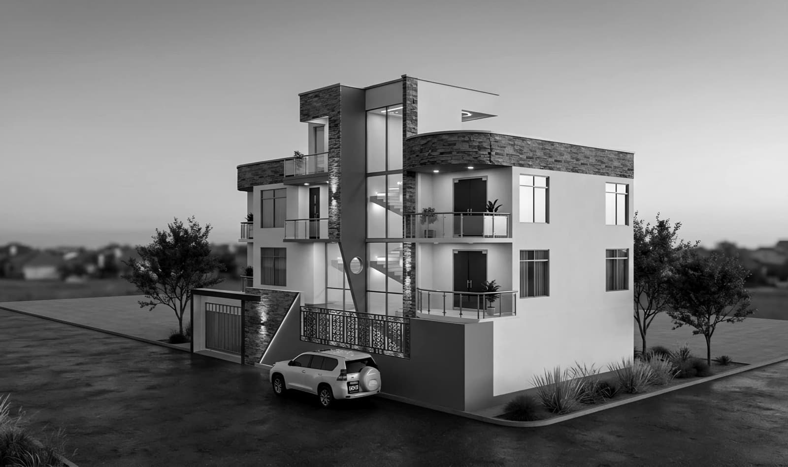
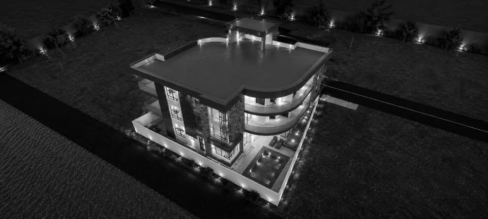
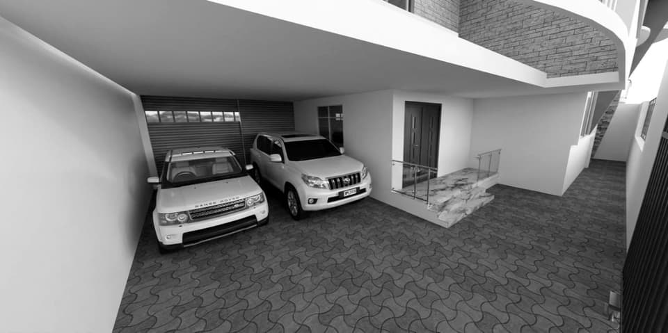
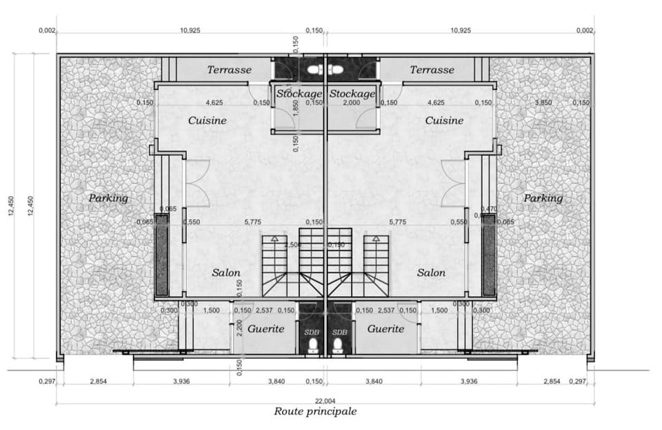
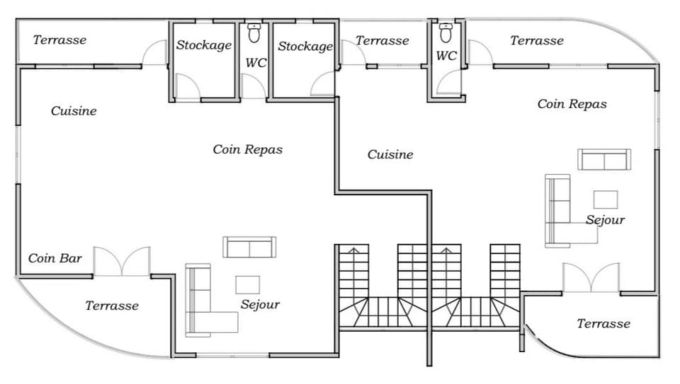
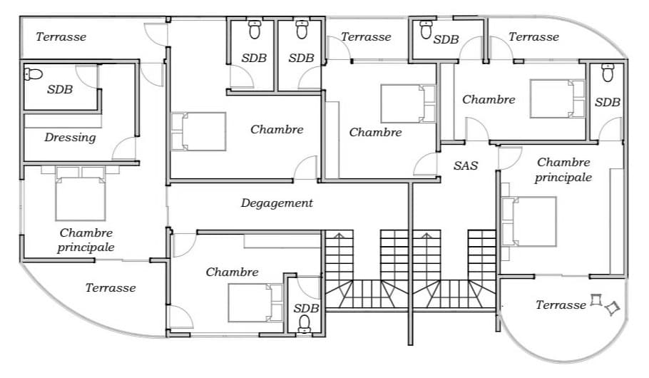
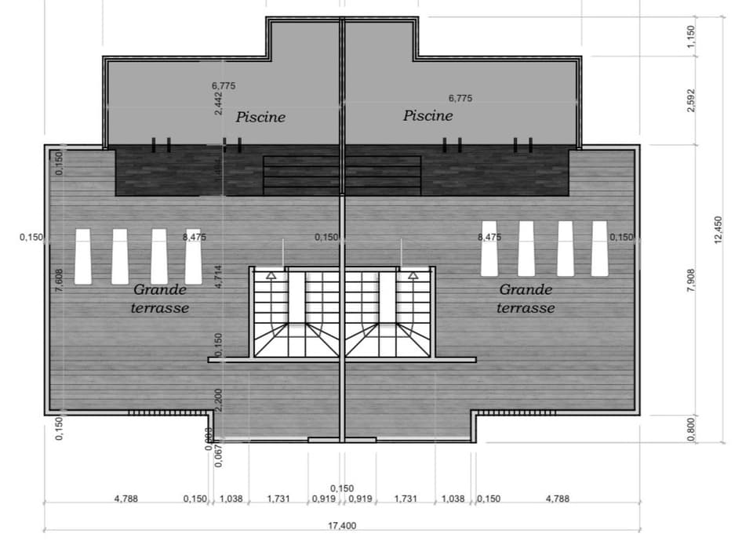
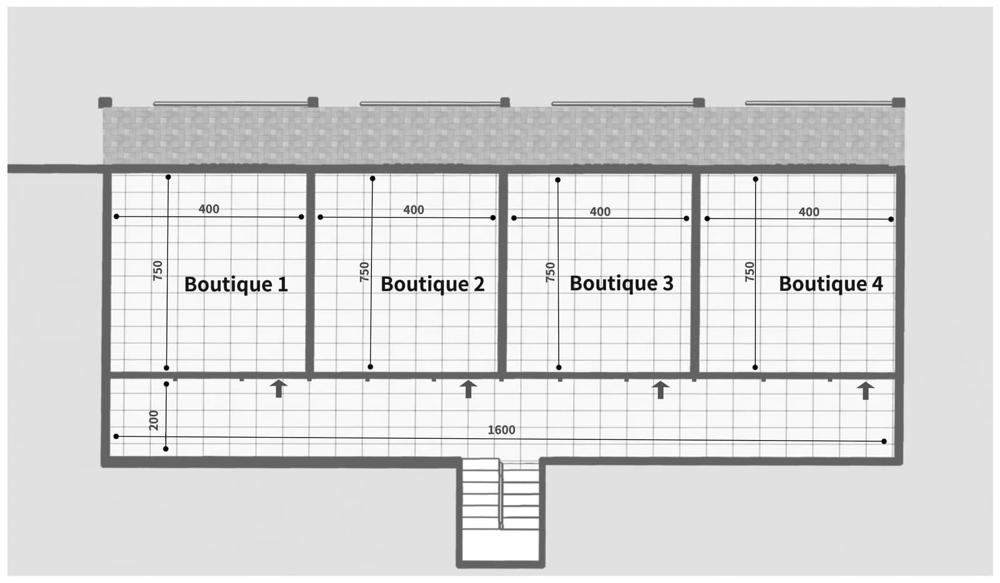
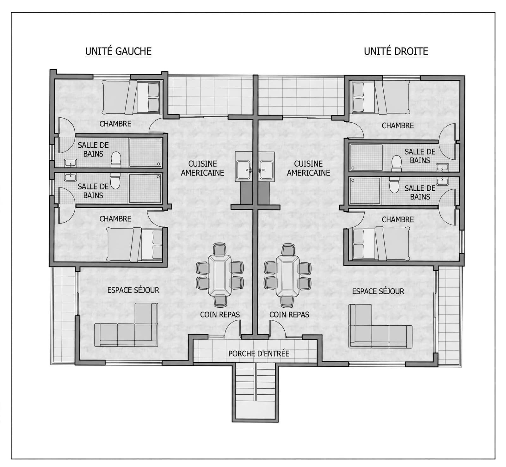

Développement de Projet · Architecture
Architecture
Conception architecturale de projets intérieurs, résidentiels et mixtes à Kinshasa — de la planification des espaces et de la volumétrie aux plans meublés, aux finitions et à la visualisation.
Voir les projets




Synthèse du portfolio
Capacité de conception
01 Réalisé sur ce portfolio
Conception architecturale couvrant l’architecture intérieure, résidentielle et commerciale mixte : planification spatiale, volumétrie et conception des façades, architecture intérieure, agencement des logements et des plans, conception du mobilier et des menuiseries, plan d’éclairage, spécification des finitions et des matériaux, et visualisation.
02 Livrables de conception habituels
Plans meublés et cotés ; visualisations extérieures et intérieures ; spécification des finitions et des matériaux ; conception du mobilier et des menuiseries ; plan d’éclairage.
03 Autres services proposés par SUJO
Coordination de la conception, études techniques, construction et rénovation, suivi des travaux et gestion de projet.
Seul le travail de conception architecturale réalisé par SUJO est présenté comme périmètre de chaque projet. Les autres services cités sont proposés par le cabinet mais ne faisaient pas partie de ces missions.
Projets de ce portfolio
Nos projets
Référence projet / 01 · Architecture intérieure
Hall Commercial & Service Client
Présentation du projet
01 Objectif
Réaliser la conception architecturale intérieure d’un hall commercial et de service client de plain-pied, réunissant bureaux de conseil, présentation de produits et une vaste zone d’attente assise dans un volume ouvert unique.
02 Type de bâtiment
Aménagement intérieur commercial, de plain-pied, dans l’enveloppe d’un bâtiment existant.
03 Périmètre conçu
Zone d’entrée et vitrine ; banque d’accueil ; rangées de postes conseillers ; rangées de sièges d’attente ; salon à assises souples ; menuiseries de présentation des produits ; emplacements d’écrans ; une salle fermée attenante au hall ; spécification des finitions, de l’éclairage et du mobilier.
04 Statut et rôle
Phase de conception ; conception architecturale par SUJO. Les images sont des visualisations de conception, et non des photographies d’ouvrages réalisés.
Concept architectural
01 Parti architectural
Un volume ouvert unique, lisible dès l’entrée : l’accueil à l’entrée, les bureaux des conseillers d’un côté, l’attente de l’autre, et un axe de circulation dégagé sur toute la longueur du hall.
02 Fonctionnalité
Trois usages se partagent le plateau : service assisté aux bureaux, libre-service et présentation des produits aux meubles, attente et séjour dans les rangées de sièges et le salon.
03 Principes d’aménagement
Orientation immédiate dès l’entrée ; capacité d’attente maintenue en vue des écrans ; postes conseillers accessibles sans traverser la zone d’attente.
04 Identité visuelle et matériaux
La couleur est portée par l’architecture — poteaux, assises et suspensions — sur un sol neutre aspect marbre. Briques apparentes et tasseaux de bois verticaux marquent les murs d’accent.
Plans et présentation technique
01 Lecture du plan
Entrée et vitrine à une extrémité ; banque d’accueil ; îlot de postes conseillers ; rangées de sièges clients ; guichets le long du flanc ; une salle fermée attenante au hall.
02 Dossier graphique disponible
Un plan meublé et une série de visualisations intérieures. Aucune élévation, coupe ni plan coté ne fait partie de cette référence.
Référence projet / 02 · Architecture résidentielle
Appartement R+3
Présentation du projet
01 Objectif
Réaliser la conception architecturale d’un immeuble résidentiel en duplex jumelés : deux logements en miroir partageant une même enveloppe, chacun s’élevant d’un rez-de-chaussée de stationnement et d’accueil jusqu’à une terrasse privée avec piscine en toiture.
02 Type de bâtiment
Résidentiel, duplex jumelés, rez-de-chaussée plus deux étages et un niveau de toiture-terrasse (configuration R+3), construction neuve.
03 Périmètre conçu
Rez-de-chaussée : parking couvert, salon, guérite, cuisine par logement. Niveau de vie : cuisine, coin repas, coin bar, séjour. Niveau des chambres : trois chambres avec salle de bains par logement, dont une suite parentale avec dressing. Toiture : piscine privée et solarium par logement.
04 Statut et rôle
Phase de conception ; conception architecturale par SUJO, concepteur principal Dan Asumani. Les plans et vues extérieures sont des visualisations de conception, et non des photographies d’ouvrages réalisés.
Concept architectural


01 Parti architectural
Un volume de duplex jumelés superposés, symétrique de part et d’autre d’un mur mitoyen, avec un angle courbe habillé de pierre qui marque la façade d’entrée, et une circulation verticale entièrement indépendante pour chaque logement.
02 Fonctionnalité
Quatre niveaux par logement séparent clairement les fonctions : arrivée et stationnement au sol, pièces de jour au-dessus, chambres privées à l’étage suivant, et terrasse avec piscine à ciel ouvert en toiture.
03 Principes d’aménagement
Plans en miroir de part et d’autre d’une cage d’escalier commune ; chambres éloignées de la façade sur rue ; dressing et salle de bains attenante pour la chambre principale.
04 Identité visuelle et matériaux
Volumes d’accent habillés de pierre et façade enduite courbe contre des vitrages à menuiseries sombres ; platelage bois et couvertines en pierre définissent les terrasses-piscines en toiture.
Plans et présentation technique
Rez-de-chaussée — parking & accueil

Niveau de vie — cuisine & séjour

Niveau des chambres — chambres avec salle de bains

Toiture — piscine & terrasse

01 Lecture du plan
Parking couvert et guérite au niveau de la rue ; cuisine, coin repas et séjour au niveau supérieur ; trois chambres avec salle de bains par logement à l’étage suivant ; piscine privée et solarium en toiture. Les deux logements se répondent en miroir de part et d’autre d’une cage d’escalier commune.
02 Dossier graphique disponible
Quatre plans meublés (rez-de-chaussée, niveau de vie, niveau des chambres et toiture), des plans cotés et une série de visualisations extérieures. Aucune élévation, coupe ni plan de structure ne fait partie de cette référence.
Référence projet / 03 · Architecture mixte
Projet Plus
Espace commercial & appartements — R+2
Présentation du projet
01 Objectif
Réaliser la conception architecturale d’un immeuble mixte : quatre locaux commerciaux au rez-de-chaussée sous deux niveaux résidentiels identiques, comptant chacun deux appartements de deux chambres en miroir.
02 Type de bâtiment
Mixte : rez-de-chaussée commercial et deux niveaux résidentiels identiques (configuration R+2), construction neuve.
03 Périmètre conçu
Rez-de-chaussée : quatre boutiques de même surface avec vitrines indépendantes, escalier d’accès commun et garage à l’arrière. Niveaux 1–2 (identiques) : deux appartements en miroir par étage, chacun avec deux chambres et salles de bains, cuisine américaine, coin repas, espace séjour et porche d’entrée privatif.
04 Statut et rôle
Phase de conception ; conception architecturale par SUJO. Les plans et vues sont des visualisations de conception, et non des photographies d’ouvrages réalisés.
Concept architectural
01 Parti architectural
Un volume unique en deux registres nets : un socle commercial entièrement vitré au niveau de la rue, et au-dessus une masse résidentielle sous une toiture à pentes en tuiles, soulignée d’un pignon en bois.
02 Fonctionnalité
Quatre boutiques à accès indépendant au rez-de-chaussée ; un escalier commun dessert deux étages d’appartements identiques, chacun avec deux logements autonomes de deux chambres.
03 Principes d’aménagement
Boutiques de dimensions identiques pour une location flexible ; chaque étage résidentiel dispose deux appartements en miroir de part et d’autre d’un axe central cuisine–repas, répété aux deux niveaux supérieurs.
04 Identité visuelle et matériaux
Parement en pierre éclatée et enduit sous une toiture à pentes en tuiles ; vitrines toute hauteur au rez-de-chaussée ; intérieurs chaleureux avec plafonds moulurés et lustres.
Plans et présentation technique
Rez-de-chaussée — quatre boutiques

Étage courant (1–2) — deux appartements en miroir

01 Lecture du plan
Rez-de-chaussée : quatre boutiques de même surface le long d’une façade vitrée, chacune accessible depuis la rue, avec un escalier latéral commun vers les étages. Les niveaux 1 et 2 reprennent le même plan : deux appartements de deux chambres en miroir, chacun avec cuisine américaine, coin repas et espace séjour, accessibles par un porche central commun.
02 Dossier graphique disponible
Plans meublés du rez-de-chaussée et de l’étage courant, plans cotés, et une série de visualisations extérieures et intérieures. Aucune élévation, coupe ni plan de structure ne fait partie de cette référence.
Nous contacter
Téléphone
Site web
Adresse
Kinshasa, République Démocratique du Congo
Statut des projets
Les trois projets sont en phase de conception. Toutes les images de cette page sont des visualisations de conception, et non des photographies d’ouvrages réalisés.
Établi par SUJO Engineering Consulting SARL à partir des dessins et visualisations propres à chaque projet. Cette page ne formule aucune affirmation de coût, de délai ou de performance.